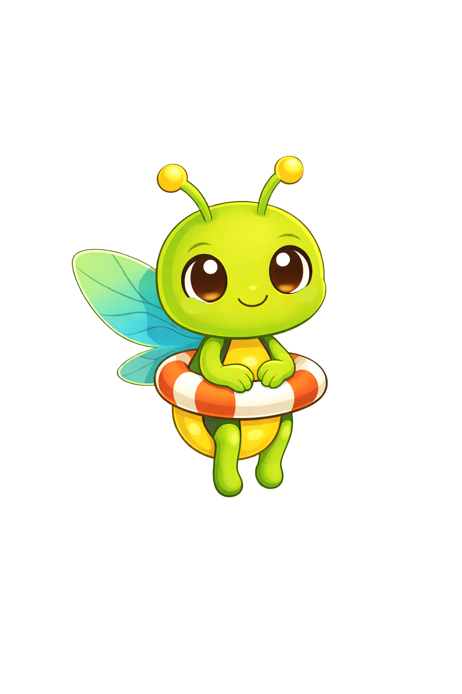
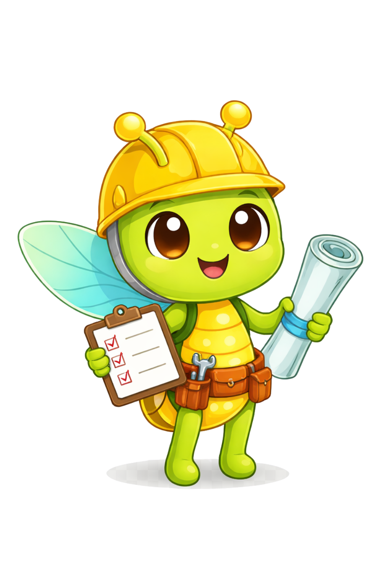
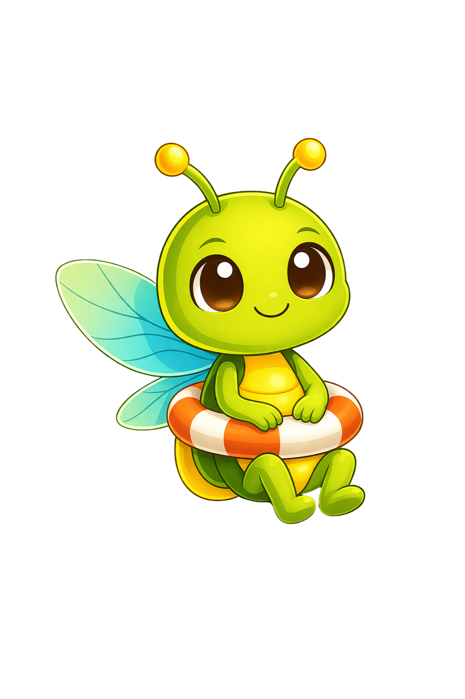

Comunicación descentralizada
Reduce la dependencia de redes tradicionales cuando la infraestructura falla.
Comunicación segura incluso en momentos críticos
LifeGuardAPP es una aplicación móvil pensada para brindar asistencia antes, durante y después de una emergencia. Integra comunicación P2P, geolocalización, alertas y educación preventiva para que las personas puedan actuar con mayor claridad, rapidez y confianza.
Reduce la dependencia de redes tradicionales cuando la infraestructura falla.
Comparte ubicación con contactos autorizados y mejora la coordinación en campo.
Incluye protocolos claros para responder mejor en diferentes escenarios.

LifeGuardAPP acompaña todo el ciclo de emergencia con herramientas prácticas.
Mejora la coordinación entre personas, familias, comunidades y equipos de apoyo.
LifeGuardAPP nace para resolver un problema crítico: cuando ocurre un desastre, la saturación de redes dificulta pedir ayuda y coordinar acciones. Por eso, combina tecnología, acompañamiento y cultura de prevención para mejorar la respuesta en contextos reales.
Mantiene contacto cuando la conectividad convencional falla.
Favorece mejor coordinación entre usuarios, familiares y autoridades.
Refuerza el autocuidado con educación y protocolos accionables.
Todo en una sola experiencia: comunicación, geolocalización, alertas y orientación preventiva.
Conecta dispositivos cercanos para disminuir dependencia de infraestructura central.
Comparte ubicación para apoyar búsqueda, coordinación y toma de decisiones.
Envía alertas rápidas con información clave para facilitar respuesta oportuna.
Incluye guías antes, durante y después de una emergencia con enfoque práctico.
Visualiza la experiencia en formato móvil con un mockup vertical y capturas destacadas.
Interfaz amigable para actuar rápido cuando cada segundo cuenta.
Diseño visual centrado en claridad y prioridad de información.
Lucy acompaña el recorrido para orientar al usuario paso a paso.


Pasar del aislamiento y la improvisación a una respuesta más coordinada, resiliente y humana.
Mejora cooperación comunitaria y asistencia temprana entre usuarios y contactos.
Mapas, alertas y contenidos educativos para decidir mejor con menos incertidumbre.
Fortalece cultura de prevención, autocuidado y preparación colectiva.
Accede a la app y empieza a explorar una herramienta diseñada para emergencias reales.
Lucy te ayuda
Conversa con Lucy para resolver dudas frecuentes sobre el uso de la aplicación.